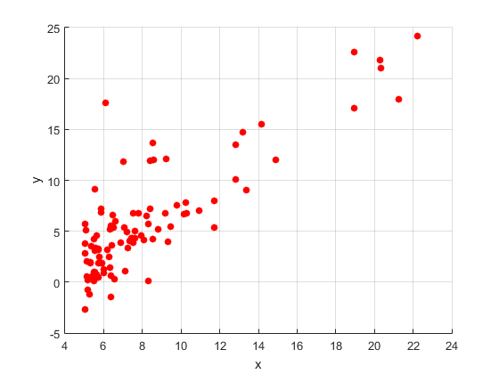
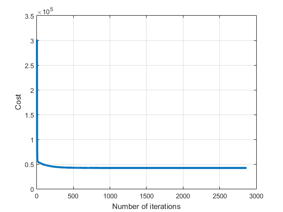
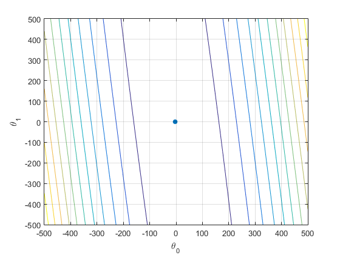
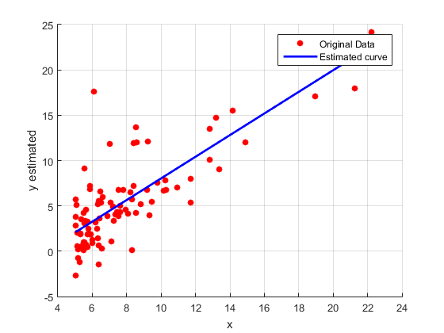
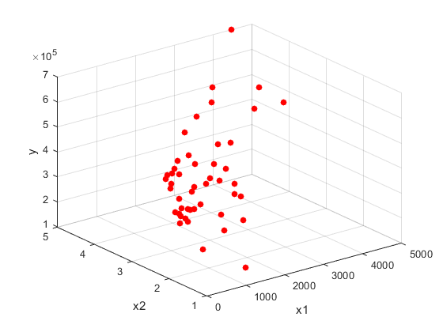
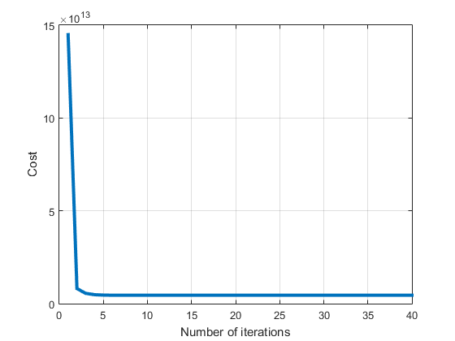
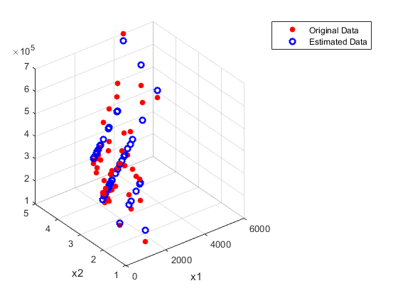

Contents
LINEAR REGRESSION
INFO
INITIALIZATION
addpath('functions/');
addpath('data/');
clear all;
close all;
UNIVARIATE LINEAR REGRESSION APPLICATION
data = importdata('Data1.txt',',',0);
x = data(:,1);
y = data(:,2);
scatter(x,y,'filled','r');
xlabel('x');
ylabel('y')
grid on;
parameters = [0,0];
theta0 = parameters(1);
theta1 = parameters(2);
alpha = 0.02;
CostHist = [];
num_iter = [];
Theta0Hist = [];
Theta1Hist = [];
J = CostFun(theta0,theta1,x,y);
CostHist = [CostHist J];
num_iter = [num_iter 1];
Theta0Hist = [Theta0Hist theta0];
Theta1Hist = [Theta1Hist theta1];
i = 2;
delta = 100;
while delta > 10^(-7)
parameters = UpdateParameters(theta0,theta1,x,y,alpha);
theta0 = parameters(1);
theta1 = parameters(2);
Theta0Hist = [Theta0Hist theta0];
Theta1Hist = [Theta1Hist theta1];
J = CostFun(theta0,theta1,x,y);
CostHist = [CostHist J];
delta = abs(CostHist(i-1) - CostHist(i));
if abs(CostHist(i) > 2*abs(CostHist(i-1)))
disp('The cost function is diverging! Consider a smaller value for alpha.')
return
end
num_iter = [num_iter i];
i = i + 1;
end
fig = figure;
plot(num_iter,CostHist,'LineWidth',3);
xlabel('Number of iterations');
ylabel('Cost');
grid on
range = 500;
Theta0Range = linspace(-range,range);
Theta1Range = linspace(-range,range);
sum = 0;
m = length(x);
for p = 1:length(Theta0Range)
for q = 1:length(Theta1Range)
for i = 1:m
sum = sum + (Theta0Range(p) + Theta1Range(q)*x(i) - y(i))^(2);
end
Cost(p,q) = (1/2*m)*(sum);
sum = 0;
end
end
fig = figure;
grid on
contour(Theta0Range,Theta1Range,Cost);
xlabel('\theta_0')
ylabel('\theta_1')
hold on
scatter(Theta0Hist(end),Theta1Hist(end),'filled','LineWidth',3);
grid on
theta0est = Theta0Hist(end);
theta1est = Theta1Hist(end);
yestimated = theta0est + theta1est*x;
fig = figure;
scatter(x,y,'filled','r');
hold on
plot(x,yestimated,'b','LineWidth',2);
xlabel('x');
ylabel('y estimated');
legend('Original Data','Estimated curve');
grid on
   
MULTIVARIATE LINEAR REGRESSION APPLICATION
data = importdata('Data2.txt',',',0);
x = data;
x(:,end) = [];
unitColumn = ones([size(x,1),1]);
x = transpose([unitColumn x]);
y = data(:,end);
fig = figure;
scatter3(transpose(x(2,:)),transpose(x(3,:)),y,'filled','r');
xlabel('x');
ylabel('y');
zlabel('z');
grid on
x = transpose(x);
for j = 2:size(x,2)
mean_value = mean(x(:,j));
std_value = std(x(:,j));
for i = 1:size(x,1)
x(i,j) = (x(i,j) - mean_value)/(std_value);
end
end
x = transpose(x);
parameters = [0;0;0];
alpha = 1;
CostHist = [];
num_iter = [];
ThetaHist = [];
J = MultiCostFun(parameters,x,y);
CostHist = [CostHist J];
num_iter = [num_iter 1];
ThetaHist = [ThetaHist parameters];
i = 2;
delta = 100;
while delta > 10^(-7)
parameters = MultiUpdateParameters(parameters,x,y,alpha);
ThetaHist = [ThetaHist parameters];
J = MultiCostFun(parameters,x,y);
CostHist = [CostHist J];
delta = abs(CostHist(i-1) - CostHist(i));
if abs(CostHist(i) > 2*abs(CostHist(i-1)))
disp('The cost function is diverging! Consider a smaller value for alpha');
return
end
num_iter = [num_iter i];
i = i + 1;
end
fig = figure;
plot(num_iter,CostHist,'LineWidth',3);
xlabel('Number of iterations');
ylabel('Cost');
grid on
yestimated = transpose(parameters)*x;
x = data;
x(:,end) = [];
unitColumn = ones([size(x,1),1]);
x = transpose([unitColumn x]);
fig = figure;
scatter3(x(2,:),x(3,:),y,'filled','r');
hold on
scatter3(x(2,:),x(3,:),yestimated,'b','LineWidth',2);
xlabel('x');
ylabel('y');
legend('Original Data','Estimated Data');
  